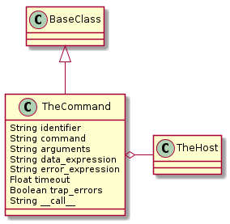

Introduction
This is a building block to execute non-blocking commands and extracting data from the output. It’s probably not the right choice for things like iperf where there is a lot of data (although if you aren’t using the --interval flag it might work).
It is based on The Query (and should be what the Query is using). The idea is to allow user’s an open-ended way to send commands to the device and get data. It’s assumed that this data will then be used in some way – as opposed to The Dump which just dumps the output to a files. To make this possible three things are needed:
- The command string
- An argument string for the command
- A regular expression to search the output
The argument-string is optional (since the command-string can contain all the options). The regular expressions needs to have a group, denoted with parentheses ‘()’ in python’s regular expression syntax. If no group is put into the regular expression it’s assumed that an error was made.
Additionally, the Command will check standard error using a regular expression so that known errors can be used to halt operation (if that’s a good idea). To make it easier for the end user the default will be to log the errors but not raise an exception (so the user has to purposefully set the expression for it to actually raise an error).
A final element to consider when using TheCommand is whether a socket timeout should raise an exception or not. By default it won’t (as noted the inspiration was the Query class which is assumed to be less important than the main part of the testing and thus tries not to kill the entire program). If it should be fatal than the trap_errors should be set to False (despite the name it will only try to catch socket-based errors).
The Command Class

The Command Class is responsible for maintaining a connection, a command and its arguments, and regular expressions to search the output. When called, it sends the command and searches the output, returning matched (group) strings or handles errors depending on how it was configured.
Its main collaborator would be something that looks like one of the clients (hopefully the SimpleClient) or the Host (it will only expect the exec_command method).
The Constructor
The only required arguments are connection and command. Arguments are optional in the event that the command parameter is actual a complete string of command + arguments (e.g. ‘ls -a’).